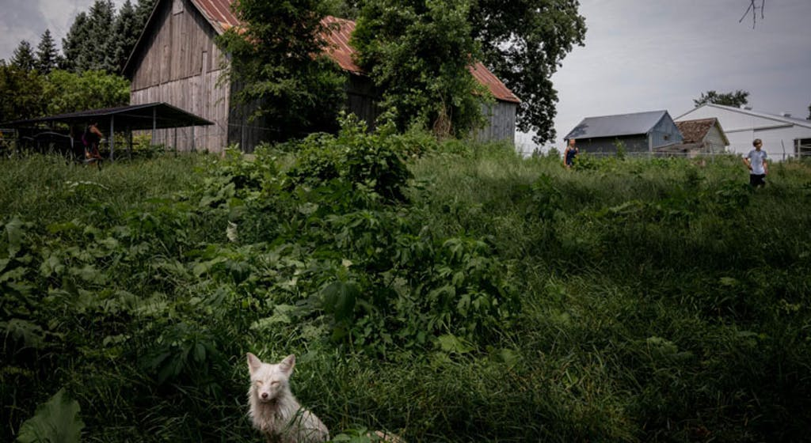
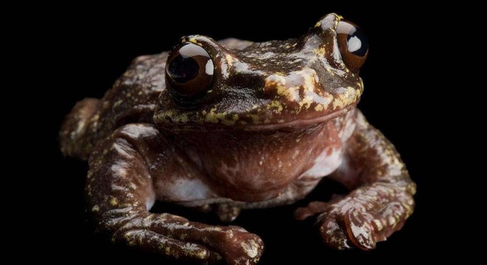

WHEN PHOTOGRAPHER ROBIN Schwartz visited Mikayla Raines in Minnesota last July, it was a mystical experience. Raines’ property was surrounded by towering oak trees and waist-high, yellow-tipped grass.
The photographer and her human subjects were covered in DEET and polka-dot bites from the swarms of mosquitoes.
The heat was so intense that the two people who lived and worked there walked around in their bras, and the bright sun painted them with harsh lighting. “It was like a fantasy world,” Schwartz says. The truth is, scientists don’t know how many species of plants, animals, fungi, and bacteria exist on Earth. The most recent estimate put that number at 2 billion, and that will most likely change at some point.
One thing we do know: The western black rhinoceros, the Tasmanian tiger, and the woolly mammoth are among the creatures whose populations at one point dwindled to zero, and it’s possible that species extinction is happening a thousand times more quickly because of humans.
Extinction happens when environmental factors or evolutionary problems cause a species to die out. The disappearance of species from Earth is ongoing, and rates have varied over time. A quarter of mammals is at risk of extinction, according to IUCN Red List estimates.
To some extent, extinction is natural. Changes to habitats and poor reproductive trends are among the factors that can make a species’ death rate higher than its birth rate for long enough that eventually, none are left.
